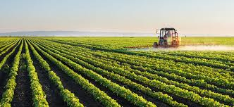
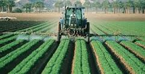
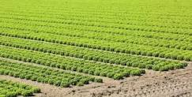
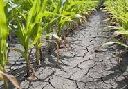
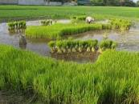
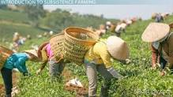
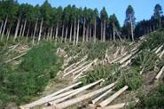
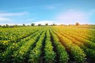

<!doctype html>
<html lang="en">
  <head>
    <!-- Required meta tags -->
    <meta charset="utf-8">
    <meta name="viewport" content="width=device-width, initial-scale=1, shrink-to-fit=no">
    <!-- Bootstrap CSS -->
    <link rel="stylesheet" href="https://stackpath.bootstrapcdn.com/bootstrap/4.5.0/css/bootstrap.min.css" integrity="sha384-9aIt2nRpC12Uk9gS9baDl411NQApFmC26EwAOH8WgZl5MYYxFfc+NcPb1dKGj7Sk" crossorigin="anonymous">
    <title>Farming</title>
	<link href="p1hstyle.css" rel="stylesheet" type="text/css">
  </head>
  <body>
    <!-- Optional JavaScript -->
    <!-- jQuery first, then Popper.js, then Bootstrap JS -->
    <script src="https://code.jquery.com/jquery-3.5.1.slim.min.js" integrity="sha384-DfXdz2htPH0lsSSs5nCTpuj/zy4C+OGpamoFVy38MVBnE+IbbVYUew+OrCXaRkfj" crossorigin="anonymous"></script>
    <script src="https://cdn.jsdelivr.net/npm/popper.js@1.16.0/dist/umd/popper.min.js" integrity="sha384-Q6E9RHvbIyZFJoft+2mJbHaEWldlvI9IOYy5n3zV9zzTtmI3UksdQRVvoxMfooAo" crossorigin="anonymous"></script>
    <script src="https://stackpath.bootstrapcdn.com/bootstrap/4.5.0/js/bootstrap.min.js" integrity="sha384-OgVRvuATP1z7JjHLkuOU7Xw704+h835Lr+6QL9UvYjZE3Ipu6Tp75j7Bh/kR0JKI" crossorigin="anonymous"></script>
  </body>
</html>

 <!-- 1. nav starts -->
<nav class="navbar navbar-expand-lg  fixed-top navbar-dark bg-success">
  <a class="navbar-brand" ></a>
  <button class="navbar-toggler" type="button" data-toggle="collapse" data-target="#navbarNav" aria-controls="navbarNav" aria-expanded="false" aria-label="Toggle navigation">
    <span class="navbar-toggler-icon"></span>
  </button>
  <div class="collapse navbar-collapse" id="navbarNav">
    <ul class="navbar-nav">
      <li class="nav-item ">
        <a class="nav-link" href="index.html"><h3>Home</h3></a>
      </li>
      <li class="nav-item active">
        <a class="nav-link" href="project1menu.html"><h3>FarmingTypes</h3> <span class="sr-only">(current)</span></a>
      </li>
      
    </ul>
  </div>
</nav>
<!-- nav ends -->

	
	<div id="carouselExampleCaptions" class="carousel slide" data-ride="carousel">
 
  <div class="carousel-inner">
    <div class="carousel-item active">
      
      <div class="carousel-caption d-none d-md-block">
	   <marquee direction="up" >
	  <h1 style ="color:orange">Types Of Farming</h1> <br><br>
	  <h3>Shifting Agriculture<br>
	  Subsistence Agriculture<br>
	  Intensive Farming <br>
	  Extensive Farming <br>
	  Plantation Agriculture<br>
	  Commercial Agriculture.<br>
	  Dry Land Agriculture<br>
	  Wet Land Agriculture<br>
	  Organic farming</h3>
		</marquee>
		
        </div>
    </div>
  </div>
</div>


	<div id="carouselExampleCaptions" class="carousel slide" data-ride="carousel">
 
  <div class="carousel-inner">
    <div class="carousel-item active">
      
      <div class="carousel-caption d-none d-md-block">
	   
<div class="container-fluid">
<h1 style="color:orange">Types Of Farming</h1><br><br><br><br><br>
	<div class="row r2s">
		<div class="col-sm-3">
			
			<h5>Commercial Agriculture</h5>
		</div>
		<div class="col-sm-3">
			
			<p>The goal of commercial agriculture is a high yield, so that produce can be exported to other countries or areas for profit. Wheat, cotton, sugarcane, and corn are some commercial crops and they are grown in states including Gujarat, Punjab, Haryana, and Maharashtra.</p>
		</div>
		<div class="col-sm-3">
		
			
			<h5>Extensive Farming </h5>
		</div>
		<div class="col-sm-3">
			<p> This is the modern type of farming that can be seen largely in the developed world and in some parts of India. It relies largely on machinery as opposed to a human labour force and raises one crop per year.
		</p>
		</div>
	</div>
	<div class="row r2s">
		<div class="col-sm-3">
			
			<h5>
	  Intensive Farming
	  </h5>
		</div>
		<div class="col-sm-3">
			<p> In areas where irrigation has been possible, the farmers use fertilisers and pesticides on large scale. They have also brought their land under high yielding variety of seeds. They have mechanised agriculture by introducing machines in various processes of farming.</p>
		</div>
		<div class="col-sm-3">
			
			<h5>Dry Land Agriculture</h5>
		</div>
		<div class="col-sm-3">
			<p> Dry farming or dry-land farming may be defined as a practice of growing crops without irrigation in areas which receive an annual rainfall of 750 mm – 500 mm or even less.</p>
		</div>
	</div>
	<div class="row r2s">
		<div class="col-sm-3">
			
			
		<h5>Wet Land Agriculture</h5>
		</div>
		<div class="col-sm-3">
			<p>Many areas of India are affected by heavy monsoon rains and subsequent flooding. Well-irrigated areas, such as those in the northeast India and the Western Ghats, are suitable for farming rice, jute, and sugarcane.</p>
		</div>
	</div>
	
</div>

         </div>
    </div>
  </div>
</div>


<div id="carouselExampleCaptions" class="carousel slide" data-ride="carousel">
 
  <div class="carousel-inner">
    <div class="carousel-item active">
      
      <div class="carousel-caption d-none d-md-block">
	   
		
<div class="container-fluid">
	<div class="row r2s">
		
	<div class="row r2s">
		<div class="col-sm-3">
			
			<h5>Subsistence Agriculture</h5>
		</div>
		<div class="col-sm-3">
			<p>  Majority of farmers in the country practise subsistence farming.
It is characterised by small and scattered land holdings and use of primitive tools.
As the farmers are poor, they do not use fertilisers and high yielding variety of seeds in their fields to the extent they should do.
Facilities like electricity and irrigation are generally not available to them.
Features of Subsistence Farming:

The whole family works on the farm
Most of the work is done manually
Yield is not very high		
		</div>

		<div class="col-sm-3">
			
			<h5>Shifting Agriculture</h5>
		</div>
		<div class="col-sm-3">
			<p>All a piece of forest land is cleared by felling trees and burning of trunks and branches.
After the land is cleared, crops are grown for two to three years and then the land is abandoned as the fertility of the soil decreases.
The farmers then move to new areas and the process is repeated.
Dry paddy, and vegetables are the crops commonly grown in this type of farming.
This practice is known by different name in different regions of India like:
Jhum in Assam,
Ponam in Kerala,
</p>
		</div>
		</div>
		<br>
	<div class="row r2s">
		<div class="col-sm-3">
			
			<h5>Plantation Agriculture</h5>
		</div>
		<div class="col-sm-3">
			<p> Plantation farming is bush or tree farming. 
It is a single crop farming of rubber, tea, coconut and fruit crops like apples, grapes, oranges, etc.
 Most of the crops grown in plantation agriculture have a life cycle of more than two years.
Natural rubber,  and coffee are all tree crops and take years to mature, but afterwards they are productive for long periods.
Plantation agriculture is confined within tropical areas, i.e., both sides of the equator.</p>
		</div>
	</div>
</div>
         </div>
    </div>
  </div>
</div>
<!--Rmya code-->


<!--------organic -->

<div id="carouselExampleCaptions" class="carousel slide" data-ride="carousel">
 
  <div class="carousel-inner">
    <div class="carousel-item active">
      
      <div class="carousel-caption d-none d-md-block">
<marquee direction="up">
<div class="container-fluid">
<h1 style="color:orange">Types Of Organic Farming</h1>
		
	<div class="row r2s">
		<div class="col-sm-12">
			<h5>Pure Organic</h5>
			<p> It involves the use of organic manures and bio-pesticides with complete avoidance of inorganic chemicals and pesticides.</p>
		</div>
	</div>
	<div class="row r2s">
		<div class="col-sm-12">
			<h5>Integrated Organic Farming</h5>
			<p> It involves integrated nutrients management and integrated pest management.
It is the type of farming in which development of crops from natural resources having the complete nutritive value and manages to prevent the crop or plants from the pests.</p>
        </div>
	</div>
	<div class="row r2s">
		<div class="col-sm-12">
			<h5>Integration of different orgainc farming</h5>
			<p> Integration of different farming systems involves several other components of farming such as poultry, mushroom production, goat rearing, and fishpond simultaneously with regular crop components.</p>
		</div>
	</div>
	<div class="row r2s">
		<div class="col-sm-12">
			<h3>Techniques of Organic Farming</h3>
			<ol>
	 <li>Crop Rotation:- It is the technique to grow various kind of crops in the same area, according to the different seasons, in a sequential manner.</li>
	 <li>Green Manure: It refers to the dying plants that are uprooted and turned into the soil to make them act as a nutrient for the soil to increase its quality.</li>
	 <li> Biological Pest Control:- With this method, we use living organisms to control pests with or without the use of chemicals.</li>
	  <li>Compost:Highly rich in nutrients, it is a recycled organic matter used as a fertilizer in the agricultural farms</li>
	 <li>Management of Soil:
	 <ul>
	 <li>Soil management is the soul of organic farming. It’s a well-known fact that after taking one crop, the soil of the farm loses most of its nutrients and its fertility goes down.</li>
	 <li>To process of recharging the soil with all the necessary nutrients is called soil management. In organic farming the nutrients are recharged in the soil through natural ways to increase the soil fertility.</li>
	 </ul>
	 </li>
	 <li>Management of Weeds</li>
	 </ol>
	 </div>
	</div>
	
	<div class="row r2s">
		<div class="col-sm-12">
			<h3>objective of Organic Farming</h3>
	<li>Increase genetic diversity.</li>
	<li>Promote more usage of natural pesticides.</li>
	<li>Ensure the right soil cultivation at the right time.</li>
	<li>Keep and build good soil structure and fertility.</li>
	  
	  </ul>
	 </div>
	</div>
	
</div>
</marquee>
</div>
	</div>
</div>
</div>

</div>
<div class="container-fluid">
<br><br>
<div class="row">
<div class="col-md-8">
<div class="container">
<div >
<iframe width="700" height="400" src="https://www.youtube.com/embed/QUiM-kCwNUg" frameborder="0" allow="accelerometer; autoplay; encrypted-media; gyroscope; picture-in-picture" allowfullscreen></iframe>
</div>
</div>
</div>
<div class="col-md-4">
<div class="container">
<h3> Types of Farming...</h3>
<p> watch the video</P>

</div>
</div>
</div>


<!--ende ramya-->


 <!-- Footer Links -->
  <div class="container-fluid text-center text-md-left">

    <!-- Grid row -->
    <div class="row">

      <!-- Grid column -->
      <div class="col-md-6 mt-md-0 mt-3">

        <!-- Content -->
        <h5 class="text-uppercase">To Buy Ferilizers</h5>
        <p>Login to your account and click on buy ,you will be redirected to farmers market page</p>

      </div>
	  <div class="col-md-6 mt-md-0 mt-3">

        <!-- Content -->
        <h5 class="text-uppercase">To See Various Farming Techniques</h5>
        <p>Click on farming doopdown button to see various farming techniques</p>

      </div>
    </div>
    <!-- Grid row -->

  </div>
  <!-- Footer Links -->

  <!-- Copyright -->
  <div class="footer-copyright text-center py-3">© 2020 Copyright:
    <a href="https://mdbootstrap.com/"> FarmingWebsite.com</a>
  </div>
  <!-- Copyright -->

</footer>
<!-- Footer -->
